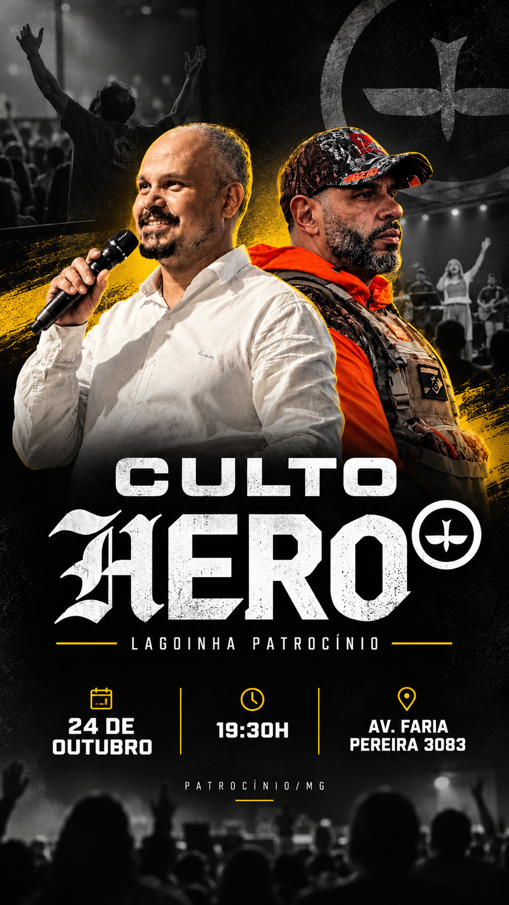

H
PRIMEIROCULTO
HEROSÁBADO24/10

AO VIVO
PATROCÍNIO · MG
URGENTE1º CULTO HERO · NESTE SÁBADO
TREMENDO
TREMENDO
TREMENDO
+1
NÃO FICA DE
FORA
NÃO FIQUE
DE FORA!
DE FORA!
PLANTÃO
VOCÊ ESTÁ CONVOCADO.
TRAGA MAIS UM!
SÁBADO · 24/10
19H30
AV. FARIA PEREIRA, 3083 · PATROCÍNIO/MG